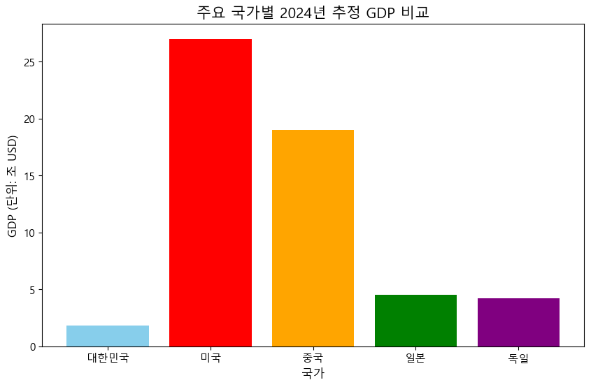

# 예시 (아직 실행하지 마세요. 개념 설명입니다)
gdp_korea_2024 = 2200.0 # 단위: 조 원 (실수)
population_korea_2024 = 51700000 # 단위: 명 (정수)2 week2. Variables
3 제 2주차: 데이터에 이름표를 붙여주자! (변수와 기본 자료형)
강의 개요:
지난주에는 파이썬의 기본 계산 기능과 Colab 환경에 익숙해지는 시간을 가졌습니다. 하지만 실제 데이터를 다루려면 숫자나 글자들을 단순히 계산하는 것 이상이 필요합니다. 오늘은 데이터를 효율적으로 저장하고 관리하는 핵심 개념인 변수(Variable) 와 데이터의 종류를 나타내는 자료형(Data Type) 에 대해 깊이 알아볼 것입니다. 또한, 사용자로부터 직접 정보를 입력받는 방법과 데이터의 종류를 필요에 따라 바꾸는 형 변환에 대해서도 배우고 실습합니다. 이 개념들은 앞으로 우리가 경제 및 회계 데이터를 다루는 데 있어 가장 기초적이면서도 중요한 토대가 됩니다.
이번 시간 학습 목표:
- 변수가 왜 필요한지 경제/회계 데이터 예를 통해 이해하고, 변수를 만들어 값을 저장(할당)할 수 있습니다.
- 정수(
int), 실수(float), 문자열(str), 불리언(bool) 등 파이썬의 기본 자료형을 구분하고, 실제 경제 지표(GDP, 인구, 환율 등) 예시와 연결할 수 있습니다. type()함수를 사용하여 변수에 저장된 데이터의 자료형을 확인할 수 있습니다.int(),float(),str()함수를 사용하여 문자열로 된 숫자나 다른 형태의 데이터를 계산이나 출력에 맞게 형 변환할 수 있습니다.input()함수로 사용자로부터 국가명, GDP, 인구수 등의 정보를 입력받고, 이를 적절한 자료형으로 변환하여 활용할 수 있습니다.
3.1 1. 왜 ’변수’가 필요할까요? : 데이터 관리의 시작
지난주 마지막 예제에서 티셔츠 가격(15000), 판매량(50) 등의 숫자를 코드에 직접 사용했었죠. 만약 이 티셔츠 가게의 분기별 매출 보고서를 작성한다고 상상해 봅시다. 1분기 매출액, 2분기 매출액, 영업 비용, 순이익… 이런 값들을 매번 숫자로 직접 입력한다면 어떨까요?
- 실수 가능성: 숫자를 잘못 입력할 가능성이 커집니다. (예: ’15000’을 ’1500’으로 입력)
- 수정의 어려움: 만약 특정 분기의 매출액이 수정되어야 한다면, 코드 전체에서 해당 숫자를 찾아 모두 바꿔야 합니다.
- 가독성 저하:
15000 * 50같은 코드만 봐서는 이 숫자들이 무엇을 의미하는지 바로 알기 어렵습니다.
변수(Variable) 는 이러한 문제를 해결해 줍니다. 변수는 특정 값을 저장하는 메모리 공간에 붙이는 이름표입니다. 예를 들어, 한국의 2024년 GDP 추정치 약 2,200조 원이라는 값을 gdp_korea_2024 라는 이름표(변수명)를 붙여 저장해 둘 수 있습니다.
이렇게 변수를 사용하면 다음과 같은 장점이 있습니다.
- 의미 명확화:
gdp_korea_2024라는 이름만 봐도 ’한국의 2024년 GDP 값’이라는 것을 알 수 있습니다. (가독성 향상) - 값 재사용: 이 값을 여러 계산(예: 1인당 GDP 계산)에 쉽게 반복 사용할 수 있습니다. (재사용성 증가)
- 쉬운 수정: 만약 GDP 추정치가 2,250조 원으로 변경되면,
gdp_korea_2024 = 2250.0딱 한 줄만 수정하면 이 변수를 사용한 모든 계산 결과가 자동으로 업데이트됩니다. (유지보수 용이)
3.2 2. 변수 만들고 사용하기 : 이름표 붙이고 값 담기
파이썬에서 변수를 만드는 방법은 아주 간단합니다. 할당 연산자 (=) 를 사용해서 변수 이름에 값을 저장(할당)하면 됩니다.
변수이름 = 값
주의: =는 “같다”는 의미가 아니라, “오른쪽의 값을 왼쪽의 변수 이름에 할당(저장)하라” 는 명령입니다!
예제 1: 국가별 정보 변수에 저장하고 출력하기
# 국가 정보 변수에 할당
country_name_kr = "대한민국"
population_kr = 51700000 # 2024년 추정치 (정수)
gdp_kr_trillion_krw = 2200.0 # 2024년 추정치 (조 원, 실수)
country_name_us = "미국"
population_us = 335000000 # 2024년 추정치 (정수)
gdp_us_trillion_usd = 27.0 # 2024년 추정치 (조 달러, 실수)
# 변수에 저장된 값 출력
print("국가명:", country_name_kr)
print("인구수:", population_kr, "명")
print(f"GDP: {gdp_kr_trillion_krw} 조 원") # f-string 사용 예시
print("\n--- 다른 국가 정보 ---") # \n은 줄바꿈
print("국가명:", country_name_us)
print("인구수:", population_us, "명")
print(f"GDP: {gdp_us_trillion_usd} 조 달러")국가명: 대한민국
인구수: 51700000 명
GDP: 2200.0 조 원
--- 다른 국가 정보 ---
국가명: 미국
인구수: 335000000 명
GDP: 27.0 조 달러예제 2: 회계 정보 변수에 저장하기
# 가상 기업 'ABC전자'의 2024년 실적
company_name = "ABC전자"
revenue_2024 = 150000000000 # 매출액 (원)
operating_cost_2024 = 120000000000 # 영업 비용 (원)
net_income_2024 = revenue_2024 - operating_cost_2024 # 순이익 계산
print("회사명:", company_name)
print("2024년 매출액:", revenue_2024, "원")
print("2024년 영업비용:", operating_cost_2024, "원")
print("2024년 순이익:", net_income_2024, "원")회사명: ABC전자
2024년 매출액: 150000000000 원
2024년 영업비용: 120000000000 원
2024년 순이익: 30000000000 원예제 3: 변수 값 변경 (재할당)
변수에는 다른 값을 다시 할당할 수 있습니다. 변수는 이름표일 뿐이고, 그 안에 담긴 내용물(값)은 바뀔 수 있습니다.
# 환율 정보 (2025년 4월 17일 가상 환율)
exchange_rate_usd_krw = 1350.5 # 1달러당 원화
print("현재 달러 환율:", exchange_rate_usd_krw)
# 환율이 변경되었다고 가정
exchange_rate_usd_krw = 1360.0 # 새로운 값 할당
print("변경된 달러 환율:", exchange_rate_usd_krw)현재 달러 환율: 1350.5
변경된 달러 환율: 1360.0변수 이름 규칙 (복습 및 추가)
- 영문자 또는 밑줄(
_)로 시작 (gdp_2024O,2024_gdpX) - 영문자, 숫자, 밑줄(
_)만 사용 가능 (net_incomeO,net-incomeX) - 대소문자 구분 (
gdp와GDP는 다른 변수) - 파이썬 예약어 사용 불가 (
if,else,class,import등) - [권장] 의미를 명확히 알 수 있는 이름 사용 (
population_china>pop_cn>pc) - [권장] 소문자와 밑줄 조합(스네이크 케이스) 사용 (
per_capita_gdp)
3.3 3. 데이터의 종류: 기본 자료형 (Data Types)
변수에는 다양한 종류의 데이터를 담을 수 있습니다. 파이썬은 이 데이터의 종류, 즉 자료형(Data Type) 을 중요하게 생각합니다. 왜냐하면 데이터의 종류에 따라 할 수 있는 연산이나 기능이 다르기 때문이죠. 예를 들어, 숫자(GDP, 인구)는 더하거나 뺄 수 있지만, 글자(국가 이름)를 더하는 것은 의미가 다릅니다.
파이썬의 기본적인 자료형들을 경제/회계 예시와 함께 살펴봅시다.
1. int (Integer: 정수)
- 소수점 없는 숫자를 나타냅니다.
- 예시: 인구수, 상품 개수, 연도, 회계 계정 코드 등
- 코드 예:
year = 2025
population_seoul = 9400000 # 서울시 인구 (약 940만 명)
num_companies = 350
print("연도:", year, type(year))
print("서울시 인구:", population_seoul, type(population_seoul))
print("분석 대상 기업 수:", num_companies, type(num_companies))연도: 2025 <class 'int'>
서울시 인구: 9400000 <class 'int'>
분석 대상 기업 수: 350 <class 'int'>2. float (Floating-point: 실수)
- 소수점이 있는 숫자를 나타냅니다. 매우 큰 수나 작은 수를 표현할 때 지수 형태(예:
2.5e-4)를 사용하기도 합니다. - 예시: GDP, 주가, 이자율, 환율, 물가 상승률, 재무 비율 (예: 부채 비율) 등
- 코드 예:
gdp_china_trillion_usd = 19.0 # 중국 GDP (약 19조 달러)
interest_rate = 0.035 # 기준 금리 3.5%
usd_krw_rate = 1355.75 # 달러/원 환율
debt_to_equity_ratio = 1.2 # 부채 비율 120%
print("중국 GDP:", gdp_china_trillion_usd, "조 달러", type(gdp_china_trillion_usd))
print("기준 금리:", interest_rate, type(interest_rate))
print("달러/원 환율:", usd_krw_rate, type(usd_krw_rate))
print("부채 비율:", debt_to_equity_ratio, type(debt_to_equity_ratio))중국 GDP: 19.0 조 달러 <class 'float'>
기준 금리: 0.035 <class 'float'>
달러/원 환율: 1355.75 <class 'float'>
부채 비율: 1.2 <class 'float'>3. str (String: 문자열)
- 글자들의 나열을 나타냅니다. 작은따옴표(
') 또는 큰따옴표(")로 감싸서 표현합니다. - 예시: 국가 이름, 도시 이름, 회사 이름, 보고서 제목, 날짜(텍스트 형태), 통화 단위(KRW, USD) 등
- 코드 예:
country = "Germany"
currency = 'EUR'
report_title = "2024년 4분기 경제 동향 보고서"
date_str = "2025-04-17"
print("국가:", country, type(country))
print("통화:", currency, type(currency))
print("보고서 제목:", report_title, type(report_title))
print("날짜(문자열):", date_str, type(date_str))국가: Germany <class 'str'>
통화: EUR <class 'str'>
보고서 제목: 2024년 4분기 경제 동향 보고서 <class 'str'>
날짜(문자열): 2025-04-17 <class 'str'>4. bool (Boolean: 불리언)
- ‘참’(
True) 또는 ‘거짓’(False) 두 가지 상태만을 나타냅니다. 주로 조건의 결과나 특정 상태를 표시할 때 사용됩니다. (주의: 첫 글자는 반드시 대문자!) - 예시: 경제 성장 여부 (
is_growth_positive), 흑자 여부 (has_surplus), 특정 조건 만족 여부 등 - 코드 예:
is_inflation_high = True # 물가가 높은 상태인가?
is_recession = False # 경기 침체 상태인가?
print("고인플레이션 상태:", is_inflation_high, type(is_inflation_high))
print("경기 침체 상태:", is_recession, type(is_recession))고인플레이션 상태: True <class 'bool'>
경기 침체 상태: False <class 'bool'>type() 함수 활용
변수에 어떤 종류의 데이터가 들어있는지 확인하려면 type(변수명) 처럼 type() 함수를 사용하면 됩니다. 위 예제들에서 type() 함수의 결과를 함께 출력했습니다.
[실습 1] 변수와 자료형 연습
아래 경제/회계 관련 데이터를 변수에 저장하고, 각 변수의 값과 자료형을 print(), type() 함수를 사용하여 출력하는 코드를 작성하세요.
- 일본(Japan)의 2024년 추정 GDP (약 4.5조 달러)를
gdp_japan_trillion_usd변수에 저장하세요. (자료형:float) - 독일(Germany)의 2024년 추정 인구 (약 8,400만 명)를
population_germany변수에 저장하세요. (자료형:int) - 유로화의 통화 코드(‘EUR’)를
currency_code_eur변수에 저장하세요. (자료형:str) - 한국이 OECD 회원국인지 여부 (참)를
is_korea_oecd_member변수에 저장하세요. (자료형:bool)
# 실습코드 작성 3.4 4. 자료형 바꾸기: 형 변환 (Type Conversion)
데이터를 다루다 보면, 때때로 자료형을 바꿔야 할 필요가 생깁니다. 예를 들어, 웹사이트에서 가져온 GDP 데이터가 "2200.0조" 같은 문자열 형태일 수 있습니다. 이걸 계산에 사용하려면 숫자(실수) 형태로 바꿔야겠죠? 또는 사용자로부터 나이를 입력받으면 문자열로 들어오는데, 이를 가지고 출생 연도를 계산하려면 정수로 바꿔야 합니다. 이렇게 데이터의 형태(자료형)를 바꾸는 것을 형 변환(Type Conversion) 또는 캐스팅(Casting) 이라고 부릅니다.
주요 형 변환 함수:
int(값): 주어진 값을 정수(int) 로 변환합니다.- 실수를 정수로 바꾸면 소수점 이하는 버려집니다. (예:
int(3.14)는3) - 숫자 형태의 문자열을 정수로 바꿀 수 있습니다. (예:
int("100")는100)
- 실수를 정수로 바꾸면 소수점 이하는 버려집니다. (예:
float(값): 주어진 값을 실수(float) 로 변환합니다.- 정수나 숫자 형태의 문자열을 실수로 바꿀 수 있습니다. (예:
float(100)는100.0,float("3.14")는3.14)
- 정수나 숫자 형태의 문자열을 실수로 바꿀 수 있습니다. (예:
str(값): 주어진 값을 문자열(str) 로 변환합니다.- 숫자나 불리언 값을 글자 형태로 바꿀 때 사용합니다. (예:
str(100)는"100",str(True)는"True")
- 숫자나 불리언 값을 글자 형태로 바꿀 때 사용합니다. (예:
형 변환 예제:
예제 1: 문자열을 숫자로 변환하여 계산하기
gdp_str = "2200.0" # GDP 데이터가 문자열로 저장된 경우 (단위: 조 원)
population_str = "51700000" # 인구 데이터가 문자열로 저장된 경우
# per_capita_gdp = gdp_str / population_str # 에러 발생! 문자열끼리는 나눗셈 불가
# 계산을 위해 형 변환
gdp_float = float(gdp_str) # 문자열 "2200.0"을 실수 2200.0으로 변환
population_int = int(population_str) # 문자열 "51700000"을 정수 51700000으로 변환
# 1인당 GDP 계산 (단위: 조 원 / 명) -> 원 단위로 바꾸려면 * 1조 / 명
# 여기서는 조 원 / 명 단위로 계산
per_capita_gdp = gdp_float / population_int
print("문자열 GDP:", gdp_str, type(gdp_str))
print("실수 GDP:", gdp_float, type(gdp_float))
print("문자열 인구:", population_str, type(population_str))
print("정수 인구:", population_int, type(population_int))
print("1인당 GDP (조 원/명):", per_capita_gdp)
# 원 단위로 1인당 GDP 출력 (약 4255만원)
per_capita_gdp_krw = (gdp_float * 1000000000000) / population_int
print(f"1인당 GDP (원): {per_capita_gdp_krw:.0f} 원") # 소수점 아래 버리고 출력문자열 GDP: 2200.0 <class 'str'>
실수 GDP: 2200.0 <class 'float'>
문자열 인구: 51700000 <class 'str'>
정수 인구: 51700000 <class 'int'>
1인당 GDP (조 원/명): 4.2553191489361704e-05
1인당 GDP (원): 42553191 원예제 2: 숫자를 문자열로 변환하여 문장 만들기
숫자를 설명하는 글자와 함께 출력하고 싶을 때, str() 함수로 숫자를 문자열로 바꿔서 + 연산자로 연결할 수 있습니다. (하지만 f-string을 쓰는 것이 더 편리합니다!)
unemployment_rate = 3.1 # 실업률 (퍼센트)
# 에러 발생: print("실업률: " + unemployment_rate + "%")
# str() 사용하여 형 변환 후 연결
report_sentence = "2024년 한국 실업률은 " + str(unemployment_rate) + "%로 집계되었습니다."
print(report_sentence)
# f-string 사용 (권장)
report_sentence_f = f"2024년 한국 실업률은 {unemployment_rate}%로 집계되었습니다."
print(report_sentence_f)2024년 한국 실업률은 3.1%로 집계되었습니다.
2024년 한국 실업률은 3.1%로 집계되었습니다.예제 3: 실수(float)를 정수(int)로 변환 (소수점 버림 확인)
average_score = 85.7
final_score = int(average_score) # 소수점 이하 버림
print("평균 점수 (실수):", average_score)
print("최종 부여 점수 (정수):", final_score)평균 점수 (실수): 85.7
최종 부여 점수 (정수): 853.5 5. 파이썬의 힘 맛보기: 데이터 시각화 미리보기
자, 지금까지 배운 변수, 자료형, 형 변환만으로는 파이썬 공부가 좀 건조하게 느껴질 수도 있을 것 같습니다. ‘그래서 이걸 배워서 뭘 할 수 있다는 거지?’ 하는 생각이 들 수도 있죠.
여기서 잠깐! 우리가 이렇게 변수에 저장하고 처리하는 데이터들이 파이썬을 통해 얼마나 의미 있는 시각 정보로 변환될 수 있는지 미리 살짝 맛보는 시간을 가져보겠습니다. 우리가 앞에서 변수에 저장했던 여러 국가들의 GDP 데이터를 간단한 막대 그래프로 비교해 보는 거죠.
아래 나오는 코드는 지금 당장 완벽하게 이해하지 않아도 괜찮습니다. 특히 import, plt, figure, bar, title, show 같은 부분들은 나중에 우리가 ’데이터 시각화’를 배울 때 자세히 다룰 내용이에요. 지금은 “아하! 우리가 변수에 넣은 데이터(국가 이름, GDP 값)가 이런 멋진 그래프를 만드는 재료가 되는구나!” 그리고 “파이썬 코드가 데이터를 이렇게 보기 좋은 그림으로 바꿔줄 수 있구나!” 라는 가능성을 느껴보는 것이 중요합니다.
# --- 데이터 시각화 맛보기 ---
# (아직 이 코드를 완벽히 이해할 필요는 없어요! 어떤 결과가 나오는지 보세요)
# 데이터를 시각화하는 강력한 도구 'Matplotlib'을 불러옵니다.
import matplotlib.pyplot as plt
import platform
# 한글 폰트 설정 (Colab 및 OS 환경에 맞게) - 중요!
# Colab 환경에서는 아래 코드 실행으로 나눔폰트 설치가 필요할 수 있습니다.
# !sudo apt-get update -qq
# !sudo apt-get install -y fonts-nanum* -qq
# 설치 후 진행 (런타임 다시 시작 필요할 수 있음)
try:
if platform.system() == 'Linux': # Colab 포함 리눅스 환경
plt.rc('font', family='NanumBarunGothic')
elif platform.system() == 'Windows': # 윈도우 환경
plt.rc('font', family='Malgun Gothic')
elif platform.system() == 'Darwin': # macOS 환경
plt.rc('font', family='AppleGothic')
except FileNotFoundError:
print("한글 폰트를 찾을 수 없습니다. 영문으로 표시되거나 글자가 깨질 수 있습니다.")
# 필요한 경우, 사용 가능한 다른 폰트 이름을 직접 지정해주세요.
plt.rcParams['axes.unicode_minus'] = False # 마이너스 기호 깨짐 방지
# --- 비교할 데이터 준비 ---
# (앞에서 배운 변수를 사용하거나, 여기서 직접 값을 지정할 수 있습니다)
# 예시: 몇 개 국가의 2024년 추정 GDP (단위: 조 USD)
countries = ['대한민국', '미국', '중국', '일본', '독일']
# 앞에서 정의한 변수를 활용할 수도 있지만, 여기서는 간단히 값을 직접 입력
# gdp_values_usd = [gdp_kr_trillion_krw / 1.35, gdp_us_trillion_usd, ...] # 단위 변환 필요시 복잡
gdp_values_usd = [1.8, 27.0, 19.0, 4.5, 4.2] # 추정치 (단위: 조 USD)
# --- 막대 그래프 그리기 ---
plt.figure(figsize=(10, 6)) # 그래프 크기 지정 (선택 사항)
plt.bar(countries, gdp_values_usd, color=['skyblue', 'red', 'orange', 'green', 'purple']) # 막대 그래프 생성
# 그래프 제목 및 축 레이블 추가 (한글!)
plt.title('주요 국가별 2024년 추정 GDP 비교', fontsize=15)
plt.ylabel('GDP (단위: 조 USD)', fontsize=12)
plt.xlabel('국가', fontsize=12)
plt.xticks(fontsize=11) # x축 국가 이름 폰트 크기 조절 (선택 사항)
plt.yticks(fontsize=11) # y축 값 폰트 크기 조절 (선택 사항)
# 그래프 보여주기
plt.show()
어떤가요? 위 코드를 실행하면 주요 국가들의 GDP를 한눈에 비교할 수 있는 막대 그래프가 나타날 겁니다. 어떤 국가의 경제 규모가 가장 크고, 어떤 국가들이 비슷한 수준인지 숫자만 볼 때보다 훨씬 빠르고 명확하게 파악할 수 있죠?
이것이 바로 데이터 시각화의 힘입니다! 우리가 지금 배우는 변수에 데이터를 담는 방법, 그리고 앞으로 배울 데이터 처리 및 시각화 라이브러리(Matplotlib 등)를 활용하면, 이렇게 복잡한 데이터를 이해하기 쉬운 그림으로 바꾸고 그 안에서 의미 있는 인사이트(통찰) 를 얻을 수 있습니다.
예를 들어, 여러 국가의 시간에 따른 1인당 GDP 변화를 선 그래프로 그려 추세를 비교하거나, 소득과 소비의 관계를 점으로 찍어(산점도) 그 패턴을 분석하는 등 무궁무진한 분석이 가능해집니다.
오늘 배운 변수와 자료형이 바로 이런 멋진 분석과 시각화의 가장 기본적인 출발점이라는 것을 기억하면서, 즐겁게 다음 단계로 나아가 봅시다!
3.6 6. 경제/회계 응용: 변수를 활용한 이익 계산
이제 오늘 배운 내용을 모두 활용해서, 지난주에 했던 이익 계산 예제를 훨씬 개선해 봅시다. 모든 값을 변수로 먼저 정의하고, 계산은 변수 이름을 사용하여 수행합니다.
시나리오 복습:
- 티셔츠 가격(Price) = 15,000원
- 판매량(Quantity) = 50장
- 고정 비용(Fixed Cost) = 500,000원
- 단위당 가변 비용(Variable Cost per Unit) = 5,000원
변수를 사용한 계산:
# --- 입력 정보 (변수로 정의) ---
price = 15000
quantity = 50
fixed_cost = 500000
variable_cost_per_unit = 5000
# --- 계산 과정 (변수 사용) ---
# 1. 총수입 (TR)
total_revenue = price * quantity
# 2. 총가변비용 (TVC)
total_variable_cost = variable_cost_per_unit * quantity
# 3. 총비용 (TC)
total_cost = fixed_cost + total_variable_cost
# 4. 이익 (Profit)
profit = total_revenue - total_cost
# 5. 이익률 (Profit Margin) 계산 (추가)
# 0으로 나누는 경우를 방지하기 위해 총수입이 0보다 클 때만 계산 (간단한 예방)
if total_revenue > 0:
profit_margin = (profit / total_revenue) * 100
else:
profit_margin = 0 # 매출이 없으면 이익률도 0
# --- 결과 출력 ---
print(f"--- 티셔츠 판매 분석 ({quantity}개 판매 기준) ---")
print(f"총수입 (TR): {total_revenue} 원")
print(f"총비용 (TC): {total_cost} 원 (고정:{fixed_cost}, 가변:{total_variable_cost})")
print(f"이익 (Profit): {profit} 원")
print(f"이익률 (Profit Margin): {profit_margin:.2f}%") # 소수점 2자리까지 출력
# --- 만약 가격이 16000원으로 변경된다면? ---
print("\n--- 가격 변경 시뮬레이션 (가격을 16000원으로 변경) ---")
price = 16000 # 이 변수 값만 수정!
# 계산 다시 수행 (동일한 코드 재사용 가능)
total_revenue = price * quantity
total_variable_cost = variable_cost_per_unit * quantity
total_cost = fixed_cost + total_variable_cost
profit = total_revenue - total_cost
if total_revenue > 0:
profit_margin = (profit / total_revenue) * 100
else:
profit_margin = 0
# 변경된 결과 출력
print(f"변경된 총수입 (TR): {total_revenue} 원")
print(f"변경된 이익 (Profit): {profit} 원")
print(f"변경된 이익률 (Profit Margin): {profit_margin:.2f}%")--- 티셔츠 판매 분석 (50개 판매 기준) ---
총수입 (TR): 750000 원
총비용 (TC): 750000 원 (고정:500000, 가변:250000)
이익 (Profit): 0 원
이익률 (Profit Margin): 0.00%
--- 가격 변경 시뮬레이션 (가격을 16000원으로 변경) ---
변경된 총수입 (TR): 800000 원
변경된 이익 (Profit): 50000 원
변경된 이익률 (Profit Margin): 6.25%변수를 사용하니 어떤 점이 좋아졌나요? 가격(price) 값만 바꾸고 계산 부분을 다시 실행하면 모든 결과가 업데이트됩니다. 훨씬 효율적이죠!
3.7 7. 마무리 및 다음 시간 예고
오늘은 데이터를 다루는 데 있어 가장 기본이 되는 변수와 자료형, 그리고 형 변환과 사용자 입력(input()) 에 대해 배웠습니다. 변수를 이용해 어떻게 데이터를 효율적으로 관리하고 코드의 가독성과 유연성을 높이는지, 그리고 데이터의 종류에 맞게 형 변환을 하는 것이 왜 중요한지, 특히 input() 함수를 사용할 때의 주의점까지 확인했습니다. 다양한 경제/회계 관련 예시를 통해 개념을 익혔기를 바랍니다.
다음 시간에는:
이제 우리는 데이터를 변수에 담고 기본적인 처리를 할 수 있게 되었습니다. 다음 주에는 프로그램의 흐름을 제어하는 첫 번째 방법인 조건문(if, elif, else) 을 배웁니다. 조건문을 사용하면 특정 조건이 참인지 거짓인지에 따라 프로그램이 다른 동작을 하도록 만들 수 있습니다. 예를 들어, “GDP 성장률이 3% 이상이면 ’고성장’이라고 출력하고, 아니면 ’저성장’이라고 출력”하는 식의 코드를 작성할 수 있게 될 것입니다. 이를 통해 우리의 파이썬 코드가 훨씬 더 지능적으로 동작하게 될 테니 기대해주세요!
3.8 두 번째 주차 과제
오늘 배운 변수, 자료형, 형 변환, input() 함수를 복습하기 위해 다음 과제를 Colab에서 새 노트(Week2_Assignment.ipynb 등)에 풀어보세요.
- 국가별 1인당 GDP 계산기:
- 사용자로부터 국가 이름을 입력받아
country_name변수에 저장하세요. - 같은 사용자로부터 해당 국가의 총 GDP(예: 조 달러 단위)를 입력받아
total_gdp_str에 저장 후, 실수(float) 로 변환하여total_gdp변수에 저장하세요. - 같은 사용자로부터 해당 국가의 인구 수(예: 만 명 단위)를 입력받아
population_str에 저장 후, 정수(int) 로 변환하여population변수에 저장하세요. (단위 주의: 입력받은 값에 10000을 곱해야 실제 인구수가 됩니다) - 1인당 GDP(달러)를 계산하세요. (계산식:
(total_gdp * 1조) / (population * 1만)) 또는 더 간단히(total_gdp * 1억) / population(조/만 = 억) - f-string을 이용하여 최종 결과를 “[국가이름]의 1인당 GDP는 약 X 달러입니다.” 형식으로 출력하세요 (X는 계산 결과, 소수점 없이 정수로 표현).
- 사용자로부터 국가 이름을 입력받아
- 재무 비율 계산 (가상):
- 어떤 기업의 총 부채(Total Liabilities)가
500억원이고, 총 자본(Total Equity)이1000억원이라고 가정합니다. 이 두 값을 각각total_liabilities,total_equity변수에 정수로 저장하세요 (단위: 원). - 부채 비율(Debt-to-Equity Ratio)을 계산하세요. (계산식: 총 부채 / 총 자본)
- 계산된 부채 비율을
debt_ratio변수에 저장하고, 이 값과 변수의 자료형을 함께 출력하세요. - f-string을 이용하여 “해당 기업의 부채 비율은 Y 입니다.” 형식으로 출력하세요 (Y는 계산 결과).
- 어떤 기업의 총 부채(Total Liabilities)가